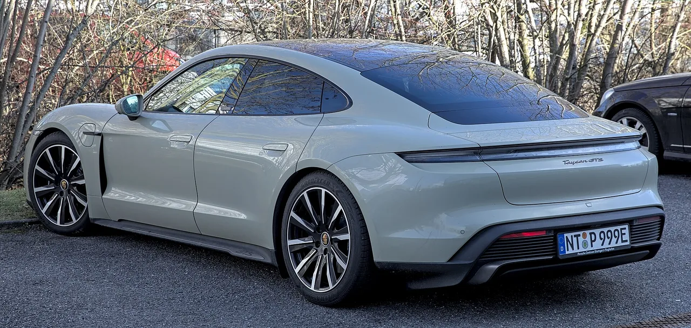
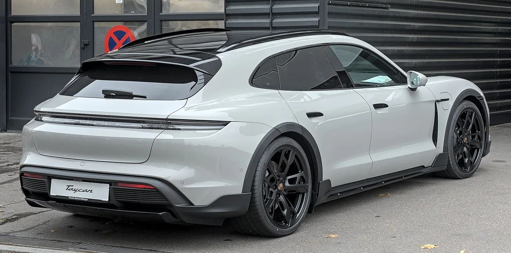
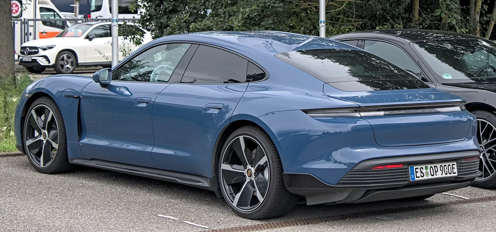

▲ 포르쉐 타이칸. 2023년 정점 이후 3년 만에 판매가 급격히 줄었다
독일 경제지 비르트샤프츠보헤가 포르쉐의 타이칸 생산 단계적 종료 계획을 보도했습니다. 시점은 2030년입니다.
배경에는 숫자가 있습니다. 2023년 4만629대였던 판매가 2026년 상반기 6,219대까지 내려앉았습니다.
다만 이는 익명 소식통을 인용한 보도이고, 포르쉐는 확인도 부인도 하지 않았습니다.
1. 3년 사이에 벌어진 일
판매 추이를 연도별로 놓고 보면 하락 속도가 드러납니다.
| 연도 | 대수 | 증감 |
|---|---|---|
| 2023 | 4만629대 | +17% (정점) |
| 2024 | 2만836대 | -49% |
| 2025 | 1만6,339대 | -22% |
| 2026 상반기 | 6,219대 | -25% |
2024년의 -49%가 결정적이었습니다. 한 해에 절반이 사라졌습니다.
이 시기에는 모델 변경(페이스리프트)이 있었습니다. 신구형 교체기에는 판매가 일시적으로 줄어드는 것이 정상입니다. 포르쉐도 그 점을 언급했습니다.
문제는 그 뒤입니다. 신형이 나온 뒤에도 2025년 -22%, 2026년 상반기 -25%로 하락이 이어졌습니다. 모델 교체기 효과로는 설명되지 않는 구간입니다.
미국 시장이 특히 가파릅니다. 2026년 상반기 1,079대로, 전년 동기 2,083대의 절반 수준입니다.
2. 왜 이렇게 빠졌나
원인은 하나가 아닙니다.
①고성능 전기차 수요 자체가 예상보다 얇았습니다. 타이칸은 "전기차도 포르쉐일 수 있다"는 것을 증명한 차였고, 초기에는 그 상징성이 통했습니다. 하지만 상징성으로 계속 팔리지는 않습니다.
②경쟁이 급격히 늘었습니다. 출시 당시에는 이 가격대에 대안이 거의 없었습니다. 지금은 다릅니다.
③포르쉐 내부 경쟁도 있습니다. 마칸 일렉트릭이 나오면서 전기 포르쉐를 원하는 수요가 분산됐습니다.
④브랜드 전략이 바뀌었습니다. 포르쉐는 2030년까지 전기차 판매 비중 80% 목표를 이미 포기했습니다. 내연기관 모델의 수명을 늘리는 쪽으로 방향을 틀었습니다.

▲ 2024년 한 해에만 판매가 절반으로 줄었다. 모델 교체기 효과만으로는 설명되지 않는다
3. 후속은 어떻게 되나 — 세 가지 시나리오
보도에 따르면 타이칸 이후가 어떻게 될지는 정해지지 않았습니다. 세 가지 가능성이 거론됩니다.
🔀 거론되는 후속 시나리오
- ①파나메라와 통합 — 두 4도어 모델을 하나로 합치는 방향
- ②이름 폐기 — 타이칸이라는 이름 자체를 정리
- ③다른 플랫폼 기반 2세대 — 완전히 새 구조로 후속 개발
①번이 가장 자주 언급됩니다. 포르쉐는 파나메라와 타이칸이라는 두 개의 4도어 라인을 유지해왔는데, 양쪽 판매가 줄어드는 상황에서 둘을 유지할 명분이 약해졌습니다.
실제로 최근 완성차 업계 전반에서 전기와 내연기관을 별도 모델로 나누던 방식에서, 하나의 모델에 두 파워트레인을 얹는 방식으로 돌아가는 흐름이 나타나고 있습니다.
4. 포르쉐는 뭐라고 했나
공식 입장은 부인에 가깝지만 완전한 부인은 아닙니다.
미하엘 라이터스 CEO는 7월에 "단기적으로 타이칸을 단종할 계획은 없다"고 밝혔습니다.
"단기적으로"라는 단서가 붙어 있습니다. 보도가 지목한 시점은 2030년이니, 이 발언과 보도는 서로 충돌하지 않습니다.
더 눈에 띄는 것은 그다음입니다. 로이터가 문의했을 때 포르쉐는 논평을 거부했습니다. 확인도 부인도 하지 않았습니다.
사실이 아니라면 명확히 부인하는 편이 브랜드에 유리합니다. 단종설은 잔존가치와 신차 판매에 직접 타격을 주기 때문입니다. 그럼에도 침묵했다는 점은 해석의 여지를 남깁니다.
다만 이는 정황일 뿐이고, 확정된 사실이 아닙니다.

▲ 포르쉐는 "단기적으로는 계획이 없다"고 했다. 보도가 지목한 시점은 2030년이다
5. 지금 타이칸을 사려던 사람은
단종설이 구매 판단에 미치는 영향을 정리하면 이렇습니다.
부정적인 면은 잔존가치입니다. 단종이 확정되면 중고 시세에 영향이 갑니다. 특히 후속이 다른 이름으로 나오는 경우 계보가 끊겨 불리합니다.
다만 2030년은 아직 4년 뒤입니다. 그때까지 생산이 이어진다면 지금 사는 차가 곧바로 구형이 되지는 않습니다.
긍정적인 면도 있습니다. 판매가 부진하면 가격 조건이 좋아집니다. 재고 물량과 프로모션이 늘어나는 시기입니다.
부품과 서비스는 크게 걱정할 부분이 아닙니다. 누적 18만 대가 생산됐고, 포르쉐는 구형 모델 지원 체계가 잘 갖춰진 브랜드입니다.

▲ 누적 18만 대가 생산됐다. 부품과 서비스는 크게 걱정할 부분이 아니다
한 가지 참고할 것은 전기 세단 시장 전반의 상황입니다. 타이칸만의 문제가 아닙니다. 이 세그먼트 자체가 예상보다 얇았습니다.
6. 정리
확인된 사실은 판매 숫자입니다. 2023년 4만629대 → 2024년 2만836대 → 2025년 1만6,339대 → 2026년 상반기 6,219대입니다. 연말 기준 1만3,000대 미만이 전망됩니다.
2030년 단종설은 독일 비르트샤프츠보헤가 익명 소식통을 인용해 보도한 내용입니다. 포르쉐가 확인한 사실이 아닙니다.
포르쉐 CEO는 "단기적으로 단종 계획이 없다"고 했지만, 보도가 지목한 시점은 2030년이라 두 진술이 서로 모순되지는 않습니다. 로이터 문의에는 논평을 거부했습니다.
후속 시나리오도 전부 미확정입니다. 파나메라와 통합, 이름 폐기, 다른 플랫폼 기반 2세대가 함께 거론되는 단계입니다.